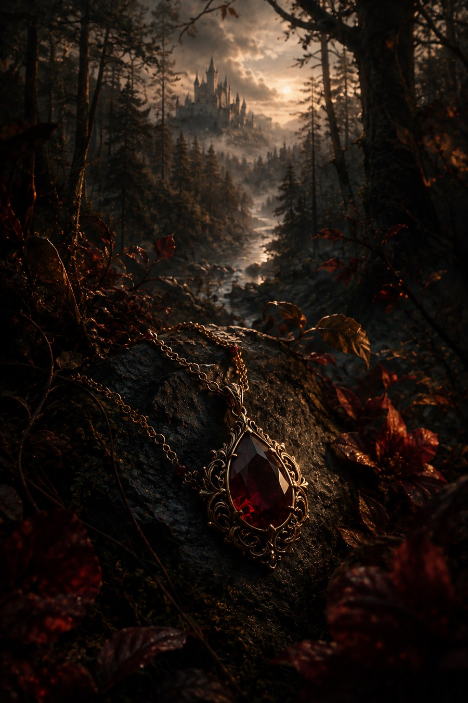

What Burns Beneath
A fantasy novel-in-progress. The day her brother is hanged, a young woman’s grief sets a much larger story into motion.
Chapter One
The day of her brother’s hanging was the day her soul cleaved in two.
The lake sat before her, confined to the stone and moss barrier around the ravine. A steady lapping broke the morning silence. Quiet, eternal, save for a few crickets still chirping their sleeping song.
She crouched at the water’s edge, holding a few pebbles in her hand. Her palms were so callus-free she could feel each ridge and crack between them. She counted them – one, two, three, four, five, six. Each similar in its make, though different swirls and specks of browns and greys deemed each one unique, all created from the Mother herself. She plucked one, the one that looked most sturdy, most likely to remain steady against a rushing stream, and cradled it close.
“Ossian,” she said aloud, somewhat startled at the sound of her own voice, the name causing her eyes to rim with silver. “Ossian, Ossian, Ossian,” she said again, each time more broken. She huddled closer to her knees, pressing her cheeks against them. Her sand colored hair fell over her ears creating a cocoon around her face. A tear finally broke, but was quickly met with a sleeve wiping it away. Her stare lifted from the rock to the water, a quiet rage simmering beneath.
“Ava!” a deep, male voice called from beyond the trees. No response.
“Ava!” it sounded again a moment later, this time with a tone that convinced her to stand and turn.
“Just a minute!” she yelled back to the voice, hiding any ripple of emotion from seconds before. She placed Ossian’s pebble at the water’s edge, its other companion pebbles laid to rest in the lake itself. “It should have been me,” she said, “it should have been anyone but you,” as she turned to the cabin on the hill.
Her younger sister’s face, still raw from crying through the night, caught Ava’s attention first. Then, her mother’s simpering by the door, asking Ava’s father if her dress were appropriate to see the council. Next, her brother’s blank face, the twin to Ossian’s staring at the ground as he slumped on his heavy black boots.
Her father was the first to greet her. “Ava, it’s time to go,” he said. She looked up at him slowly but didn’t meet his eyeline.
“I’m not going,” she said.
“Of course you are. Ossian needs you there,” he said, each word more careful than the last.
“No,” Ava replied, “He needed me the night he was taken. He needed me at the side of the bed where my niece lay, gasping for another breath.” The tears started to fall, but she continued, “He needed me as they broke down the door and saw his magic, slowly healing her, and ripped him from his daughter’s side.” Ava fell to the floor, her knees catching her with a shattering thud, her palms covering her now gleaming face.
The room was silent, save for Ava’s suppressed sobs. “We need to be there for him today,” her father said, finally, “We’ll do it together.” The large man bent down to her level, placing his age-worn yet still muscular arms around his daughter. He looked to his other daughter and son, who after a few moments, reluctantly kneeled around them as well. As last, Ava’s mother joined, leaving the family a crumpled heap on the living room floor.
※※※
The air in the town square was cold, heavy. The sun had just crested above the library, just barely a reminder that time was passing at all. Hundreds of people had gathered in the center, between the shops and markets and restaurants that made Hearthmere the trading hub it was. Of all the cities in Draethen, Hearthmere saw the most unique people, goods, and services that this country had to offer.
But not today.
Today was a day of quiet, of fear, of death.
Marshal Drevik strode in upon a horse, black as night, with six stark white horses on his tail. The townspeople let out a unanimous, audible shudder. They knew who he was. His long, dark braids thudded against his back as his horse strutted between the crowd.
He and the Six halted at the apex of the town, before the great noose that must have been erected at some point during the night before. “Good people of Hearthmere,” he said, his voice booming and echoing in such a way that Ava knew wasn’t quite natural. His mouth parted into a smile that revealed a set of sharp, blindingly white teeth. “I have come to your city on this morning to rid you of a sickness, a leech upon the good that you have worked so hard to create,” a glance to the city bedecked with street vendor’s carts. His long, silver sword encrusted with black obsidian glittered in the sun at his waist. A small dagger, mirroring the sword’s make, sat as its twin on his other hip.
The crowd stood, motionless and silent. “I sense there is fear among you today,” His smile dropped as he addressed the huddled people, lingering on a few unfortunate faces. “There is no need, for today is not a day of terror, it is a day of healing, a day that will be celebrated,” His smile reappeared as he said the last word. “I come to you today to serve King Malven Drethar,” he said.
The people of Hearthmere bucked at that name, at that utterance of their sovereign ruler. Even the birds flying overhead seemed to stop their movements, their chirping. Ava and her family went still, knit together toward the far edge of the crowd. Ava saw a tear slip from her father’s eye and down his cheek. He didn’t make to wipe it away.
“Here is the sickness himself,” Marshal Drevik said. The Six white horses parted to reveal a floating silver frame stretched with canvas meant for transporting people when sick. But there wasn’t someone dying from ailment atop it, atop it lay –
“Ossian!” Ava cried, her voice carrying with a surprising quickness in the otherwise soundless square. Her father winced as she broke the silence, his mouth a firm line as he looked to his daughter. Marshal Drevik didn’t pause, didn’t acknowledge the disturbance and continued, “It is important to King Malven Drethar that the good-hearted people of Draethen understand the threat pitted against them. Magic,” Drevik shuddered as he said the word, “is unruly, unkind, and unpredictable. Its very core is evil, twisting and molding even the best members of this society into something horribly wrong.”
Drevik motioned at his Six to guide Ossian’s limp body atop the stretcher to the center of the square. Drevik dismounted and followed it to the raised center of the plaza.
“Ossian Thalorian has demonstrated a grave injustice.” He said, “He used his unnatural power, cursed by the God of Elyndra, The Weeping Light, no doubt, to prolong his daughter’s life as she lay on the brink of death. This action may seem just to some of you, as none of us wish to see harm come to our loved ones,” his voice became slower, more intentional, more kind as he continued, “but it is the way of our world to be born of our mothers, live, then greet death, even if we deem the amount of time unfair. Ossian Thalorian has used his curse to disrupt that cycle, laying waste to rules and order. And for this, he will be executed.”
Ava’s breathing quickened, her heart booming beneath her chest. She glanced to her mother, who was holding her mouth into a wrinkled line. To her sister, whose face seemed carved in stone. To her brother, Ossian’s mirror image, who looked at his twin who lay horizontal yards before him. To her father, who she realized was looking back down at her. She could have sworn something like an ember flickered in his eyes as he held her gaze, beckoning her, encouraging her. It disappeared in an instant, but Ava had received the message.
“Marshal Drevik!” Ava yelled, tearing away from her family’s grasp, all but her father’s mouths agape. Drevik winced, but did not turn to face the sound. Ava parted through the congestion, using her small frame to her advantage. She advanced through four feet, then ten, then twenty. The faces she noticed as she forged ahead were blank, stunned. Her feet seemed to suddenly weigh a ton each.
“Marshal Drevik!” she called again, though he had returned to his monologue, and feigned indifference. Ava made it five yards to the plaza’s edge before her face met the hard, slick side one of the six white horses. Sun shone behind its rider’s head, a white mask with a lacelike pattern obscuring the face beneath, though Ava could tell that it was displeasure that burned behind. Quieting the thundering of her heart, she gathered her mettle and called once more, “Marshal Drevik!”
With the skill and precision of what could be a thousand years of training, Drevik turned to face her. His rage was palpable, causing Ava’s cheeks to redden as she beheld the dark assassin before her.
His voice now a quiet but powerful whisper as he addressed her, “Do you speak above me to seek death, girl, or are you just simple minded?”
Ava’s blood turned cold, her mouth suddenly a desert. “I-“ she stammered, “he’s my,”
“I see,” Drevik said, “this anarchist is your kin?”
“He’s my brother,” Ava said, the world sliding out beneath her.
Drevik eyes turned kind, warm as he beheld Ava’s now wet face. “I understand,” he said with a smile.
He turned on a heel and reproached the town’s center, his voice booming again, “Ossian’s sister has come to give her goodbyes to the shell that was once her brother” he said, Ava hearing a hushed murmuring coming from the crowd, “and I will offer her solace, as that is what our compassionate King would do.” He motioned for the white horse blocking her to move, allowing Ava to follow him to the plaza.
Ava’s knees wobbled as she made her way to Ossian’s side. The young man lay on his back in brown rags, eyes closed. His cheeks sunken in, his eye sockets purple and bruised, indicating the rage that the council had likely unleashed upon him in the days prior. His mouth barely parted to let air through. At a glance, he would have seemed to already have been taken by death. She knelt down and found that her knees were suddenly warm, damp. She made to move them, but realized that her knees were soaked in blood. Ossian’s blood, that had oozed out from his back, soaked the white stretcher, and pooled on the ground beneath.
Ava, stricken with horror, made her voice quiet as she addressed Ossian, “I’m here,” she said, “you’re not alone.”
“Ava,” Ossian said, his voice barely a whisper, “you shouldn’t be here.”
“It shouldn’t be you,” she said, not acknowledging his statement, “I’m so sorry, so sorry,” her voice a muffled cry.
“Ava, listen to me,” with the small amount of strength he still carried, Ossian pulled her near, “protect my daughter. Please. There are things I wish I had time to tell you, but not here…not here…”
Ava looked at him through blurry eyes, silently begging the Mother for more time. “Isryn is safe, she’s with her mother now. I’ll make sure to help her with anything I can,” Ava breathed, promising her brother.
“I need you to do something else,” Ossian said, “I need you to find our mother’s necklace. Do you know the one?”
“Y-Yes,” Ava said, “the one you gave to Isryn at her birth?”
“Yes,” Ossian said, voice straining, “it’s in her room, in a small wooden chest on the windowsill. It is…very valuable…to me.”
“Of course,” Ava said, mentally tucking that instruction away for later. She suddenly felt the grip of strong hands on her shoulders pulling her to a stand. Her brother’s blood dripped down her knees onto the crisp pavement as she stood before the city.
Drevik said to Ava, “I hope that moment was meaningful to you.” Then, he addressed his Six, “Hang him up.”
With those three words, the world slowed to a halt. Ava’s mouth turned ashen, her heart stopped completely. The blood in her veins stilled to stone.
Ava watched as Drevik smiled at the town, at her tortured brother, as his Six dismounted their horses and swarmed. She watched as they placed a pearled box, bedecked with swirls and jewels on the ground beneath the silver roped noose. She watched as they grabbed her brother from his cot and positioned him atop it. She watched as they fitted the noose around his too-young neck, his too-kind eyes barely opening.
“People of Hearthmere, may Ossian’s death be a reminder of what happens when its people toy with magic, when people’s vanity overtakes common sense. What happens when King Malven Drethar’s law is challenged.”
He turned slowly, intentionally to face Ossian. “The law is a kindness,” Ava heard him whisper to her brother.
She watched as Drevik himself kicked the box from beneath Ossian’s feet, leaving him to swing in the morning wind.
— end of excerpt —